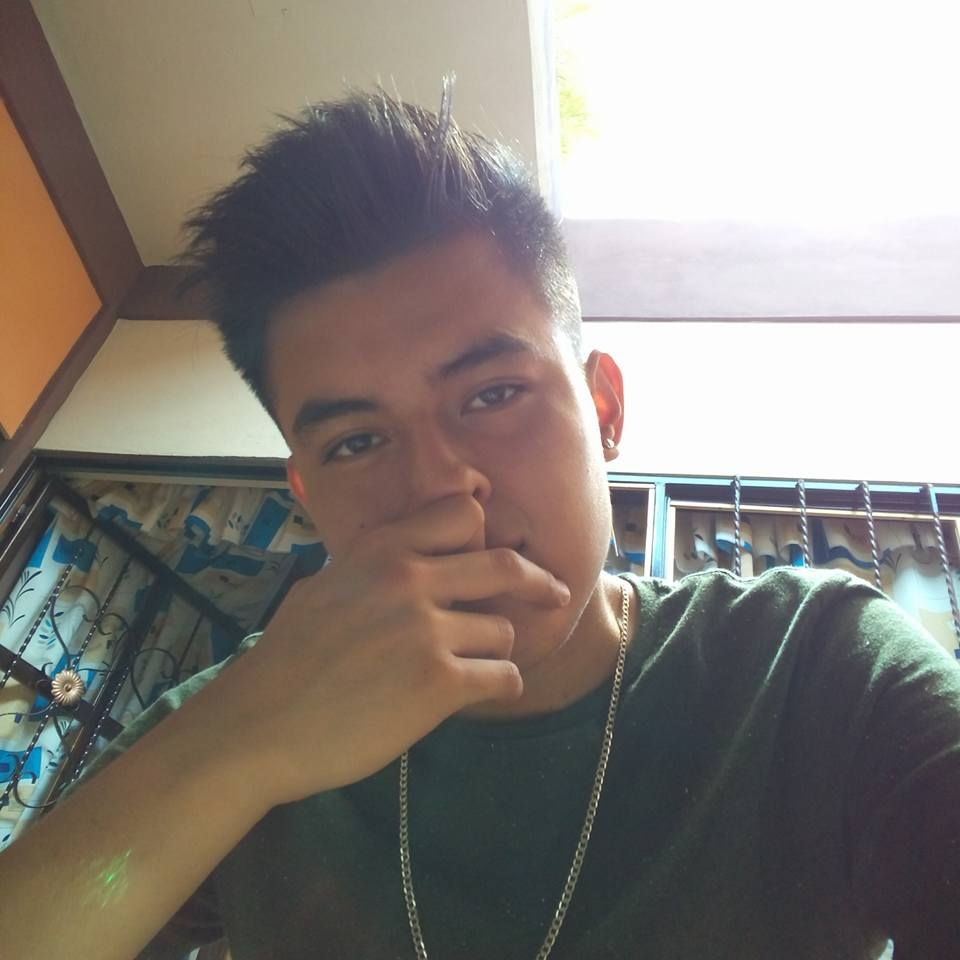

Josmar Duran Contreras

¡Hola! Soy Josmar Durán Contreras
Soy una persona alegre y apasionada por muchas cosas. Me encanta escuchar música de todo tipo, sin un género favorito en particular, simplemente disfruto de los buenos sonidos y letras.
Actualmente, estoy estudiando la carrera de Diseño Gráfico, ya que me gusta el mundo visual y creativo. Siempre me ha llamado la atención la manera en que el diseño puede transmitir mensajes y emociones de forma única.
También me fascinan los carros y el fútbol, dos pasiones que me han acompañado desde siempre. Además, disfruto mucho jugar videojuegos, ya que me permiten sumergirme en diferentes mundos y compartir momentos con amigos.
Uno de mis sueños frustrados fue ser piloto aviador. Siempre me ha impresionado la idea de volar y surcar los cielos, pero aunque no pude seguir ese camino, sigo admirando la aviación.
En general, soy alguien que busca disfrutar cada momento, siempre con buena actitud y energía positiva.